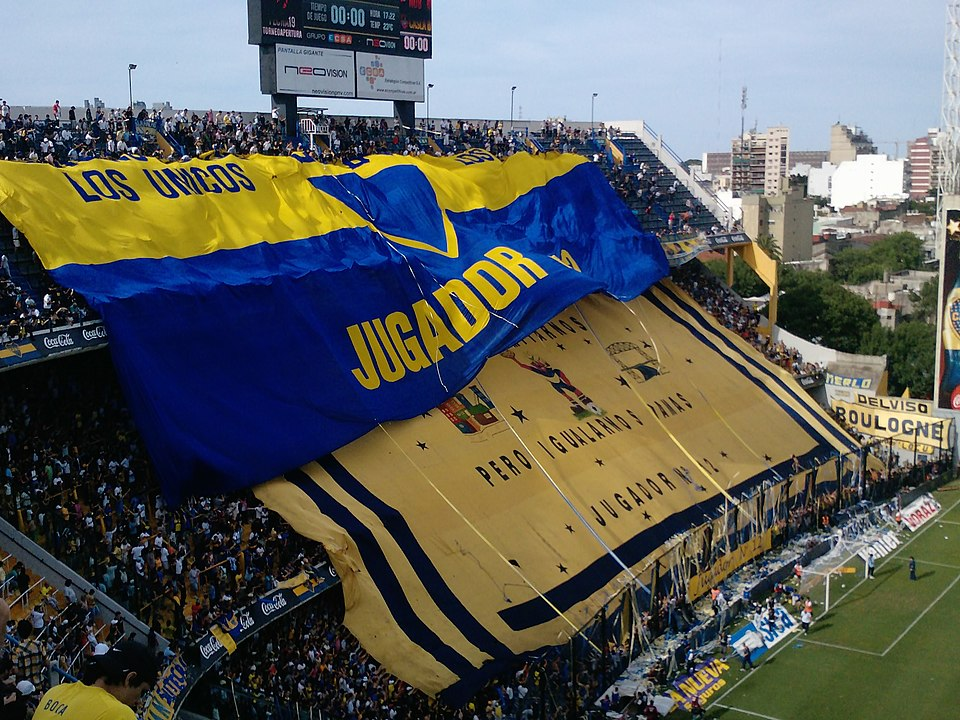

Quiénes somos
Nuestra pasión
En el corazón de cada hincha de Boca Juniors late una historia, un recuerdo imborrable de glorias pasadas y presentes. En Camisetas Boca Juniors Retro, compartimos esa pasión profunda y entendemos el valor sentimental que encierran las camisetas que marcaron épocas doradas.
Nuestra misión
Revivir los momentos icónicos del club, traer de vuelta la nostalgia y permitirte vestir con orgullo las camisetas que llevaron leyendas. Seleccionamos y ofrecemos una amplia colección de camisetas retro, abarcando diferentes décadas y modelos emblemáticos.
¿Por qué elegirnos?
- Selección cuidada de camisetas originales y réplicas fieles.
- Asesoramiento personalizado para cada hincha.
- Pasión y conocimiento sobre la historia de Boca Juniors.
- Compra segura y atención dedicada.
"No vendemos solo camisetas, vendemos historia, pasión y orgullo boquense."
Conocé más
Te invitamos a explorar nuestra tienda y a contactarnos si buscás una camiseta especial o tenés alguna consulta. ¡Sumate a la comunidad xeneize y llevá con vos un pedazo de la historia azul y oro!